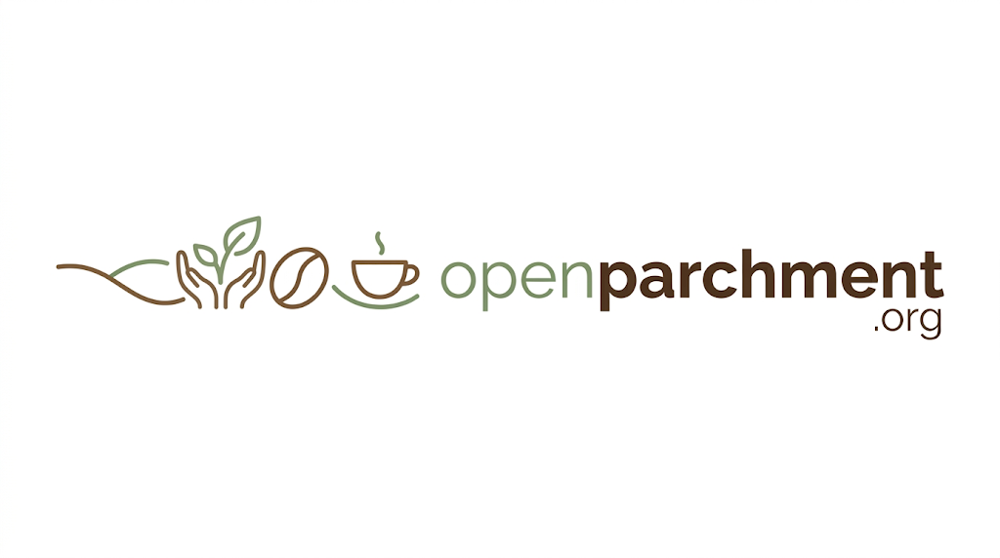

Open Parchment is the producer context layer for coffee: an open standard that turns coffee's story into data that travels with it, from the producer's hands to your cup. It's a free, non-profit standard that helps producers own their record, share what makes their coffee special, and get paid fairly. One shared format means buyers, and the AI agents working for them, can find it.
Draft v0.2 · open for feedback
About 95% of the world's 12.5 million coffee farms are smallholdings of 5 hectares or less (Enveritas). Most of those farmers' names disappear the moment their coffee is pooled with their neighbors' at a washing station or collection point. After that, every importer, roaster and coffee app describes it differently, so by the time it reaches your cup the producer's identity, story and reputation are gone.
Open Parchment keeps them attached. Drinkers and roasters can find and appreciate the people who grew their coffee, and producers can defend higher prices with the rich context behind every lot.
Open Parchment is a shared way of writing down the facts about a coffee, starting with who grew it. Think of it like the label on a bottle of wine, except it's digital, open to everyone, and the farmer can write their own.
It isn't a company, a marketplace or a certification. Nobody sells anything through it and nobody owns it. The specification is free under Creative Commons Attribution 4.0, and the code is open source.
Other projects built a place. This is a shared language. Places die. Languages spread if people use them.
We especially want to hear from producers, cooperatives, washing stations and importers, and from anyone building a coffee app who is tired of inventing their own schema. Tell us what we're getting wrong before it goes any further.